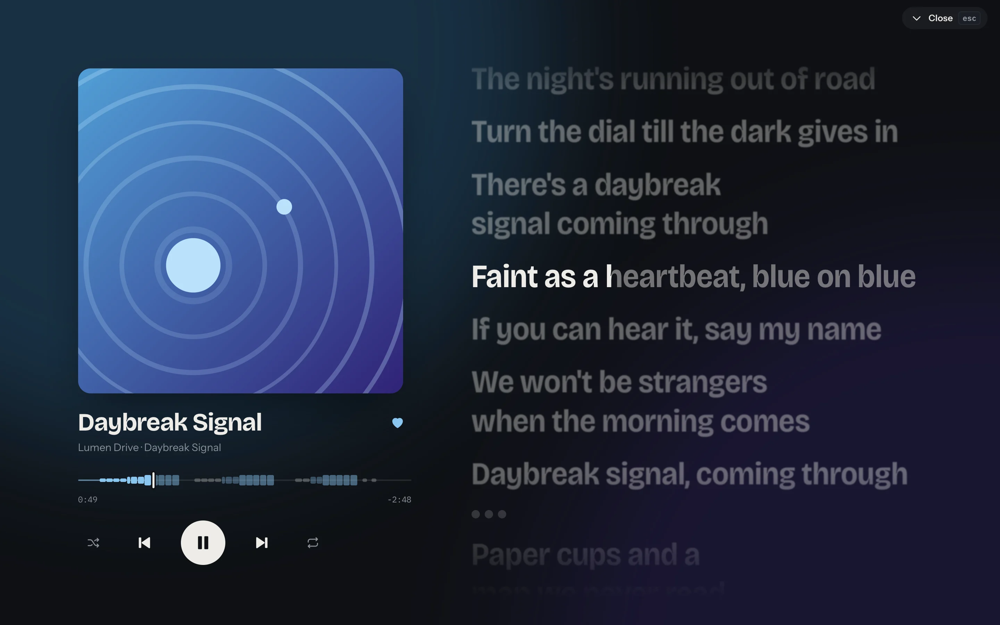
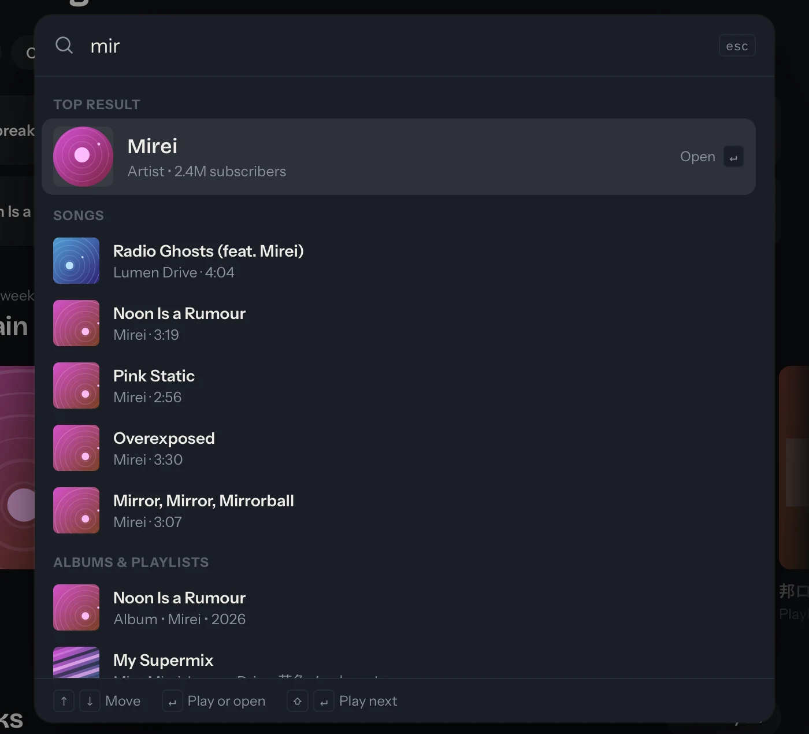
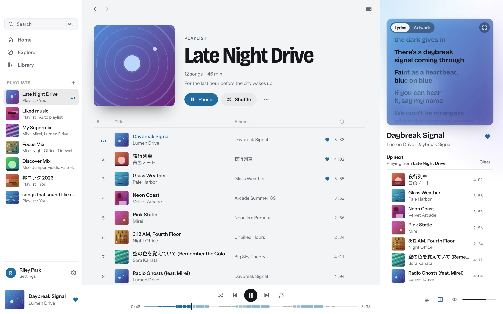

Lyrics that follow the song.
Synced lyrics from YouTube Music and LRCLIB, line by line. The seek bar is drawn from them, so you can see the chorus coming and jump to it. Press F for full screen.

One box for everything.
Press ⌘K to find songs, artists, albums and playlists, or to run a command. Enter plays, ⇧ Enter plays next.

Your library, signed in.
Bring your session over from Edge, Chrome, Brave, Firefox or Safari, or sign in inside the app. Brand channels work. The session is kept in the macOS Keychain and nowhere else.
